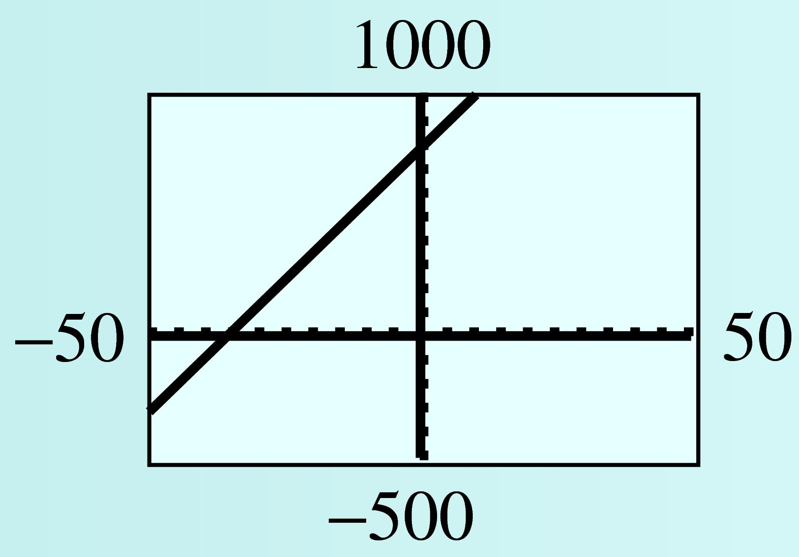
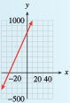

Subsection 2.2 Choosing Scales for the Axes
To create a useful graph, we must choose appropriate scales for the axes.
The axes must extend far enough to show the values of the variables.
The tick marks should be equally spaced.
Usually we should use no more than 10 or 15 tick marks.
Example 2.2.6.
In 1990, the median price of a home in the US was $92,000. The median price increased by about $4700 per year over the next decade.
Make a table of values showing the median price of a house in 1990, 1994, 1998, and 2000.
Choose suitable scales for the axes and plot the values you found in part (a) on a graph. Use \(t\text{,}\) the number of years since 1990, on the horizontal axis and the price of the house, \(P\text{,}\) on the vertical axis. Draw a curve through the points.
Write an equation that expresses \(P\) in terms of \(t\text{.}\)
How much did the price of the house increase from 1990 to 1996? Illustrate the increase on your graph.
-
In 1990 the median price was $92,000. Four years later, in 1994, the price had increased by \(\alert{4}(4700)=18,800\) dollars, so
\begin{equation*} P=92,000+\alert{4}(4700)=110,800 \end{equation*}In 1998 the price had increased by \(\alert{8}(4700)=37,600\) dollars, so
\begin{equation*} P=92,000+\alert{8}(4700)=129,600 \end{equation*}You can verify the price of the house in 2000 by a similar calculation.
Year Price of House) \((t,P)\) \(1990\) \(92,000\) \((0,\, 92,000)\) \(1994\) \(110,800\) \((4,\, 110,800)\) \(1998\) \(129,600\) \((8,\, 129,600)\) \(2000\) \(139,000\) \((10,\, 139,000)\) -
We let \(t\) stand for the number of years since 1990, so that \(t=0\) in 1990, \(t=4\) in 1994, and so on. To choose scales for the axes, we look at the values in the table. For this graph we scale the horizontal axis, or \(t\)-axis, in 1-year intervals and the vertical axis, or \(P\)-axis, for $90,000 to $140,000 in intervals of $5,000. The points lie on a straight line, as shown in the figure.

-
Look back at the calculations in part (a). The price of the house started at $92,000 in 1990 and increased by \(t \times 4700\) dollars after \(t\) years. Thus,
\begin{equation*} P=92,000+4700t \end{equation*} -
We find the points on the graph for 1990 and 1996. These points lie above \(t=0\) and \(t=6\) on the \(t\)-axis. Next we find the values on the \(P\)-axis corresponding to the two points. The values are \(P=92,000\) in 1990 and \(P=120,200\) in 1996. The increase in price is the difference of the two \(P\)-values.
\begin{align*} \text{increase in price}\amp=120,200-92,000\\ \amp=28,200 \end{align*}The price of the home increased $28,200 between 1990 and 1996. This increase is indicated by the arrows in the figure.
Note 2.2.7.
The graphs in the preceding examples are increasing graphs . As we move along the graph from left to right (in the direction of increasing \(t\) ), the second coordinate increases as well. Try Checkpoint 2.2.8, which illustrates a decreasing graph.
Checkpoint 2.2.8.
Silver Lake has been polluted by industrial waste products. The concentration of toxic chemicals in the water is currently 285 parts per million (ppm). Environmental officials would like to reduce the concentration by 15 ppm each year.
-
Complete the table of values showing the desired concentration, \(C,\) of toxic chemicals \(t\) years from now. For each \(t\)-value, calculate the corresponding value for \(C\text{.}\) Write your answers as ordered pairs.
\(t\) \(C\) \((t,C)\) \(0\) \(C=285-15(\alert{0})\) \((0, ~~~~ )\) \(5\) \(C=285-15(\alert{5})\) \((5, ~~~~ )\) \(10\) \(C=285-15(\alert{10})\) \((10, ~~~~ )\) \(15\) \(C=285-15(\alert{15})\) \((15, ~~~~ )\) -
To choose scales for the axes, notice that the value of \(C\) starts at 285 and decreases from there. We'll scale the vertical axis up to 300, and use 10 tick marks at intervals of 30. Graph the ordered pairs on the grid, and connect them with a straight line. Extend the graph until it reaches the horizontal axis, but no farther. Points with negative \(C\)-coordinates have no meaning for the problem.

Write an equation for the concentration, \(C\text{,}\) of toxic chemicals \(t\) years from now.
Note 2.2.9.
In the previous Checkpoint, we extend the graph until it reaches the horizontal axis, but no farther. Points with negative \(C\)-coordinates have no meaning for the problem.
Technology 2.2.10. Graphing an Equation.
We can use a graphing calculator to graph an equation. On most calculators, we follow three steps.
To Graph an Equation:
Press
Y=and enter the equation you wish to graph.Press
WINDOWand select a suitable graphing window.Press
GRAPH
Example 2.2.11. Using a Graphing Calculator.
In Example 2.2.6, we found the equation
for the median price of a house \(t\) years after 1990. Graph this equation on a calculator.
To begin, we press Y= and enter
For this graph, we’ll use the grid in Example 2.2.6 for our window settings, so we press WINDOW and enter
| Xmin\(=0\) | Xmax\(=10\) | |
| Ymin\(=90,000\) | Ymax\(=140,000\) |
Finally, we press GRAPH. The calculator's graph is shown in the figure.
Checkpoint 2.2.12.
Solve the equation \(2y - 1575 = 45x\) for \(y\) in terms of \(x\text{.}\)
-
Graph the equation on a graphing calculator. Use the window
Xmin\(=-50\) Xmax\(=50\) Xscl\(=5\) Ymin\(=-500\) Ymax\(=1000\) Yscl\(=100\) Sketch the graph on paper. Use the window settings to choose appropriate scales for the axes.
\(y = (1575 + 45x)/ 2 \)
- 
- 